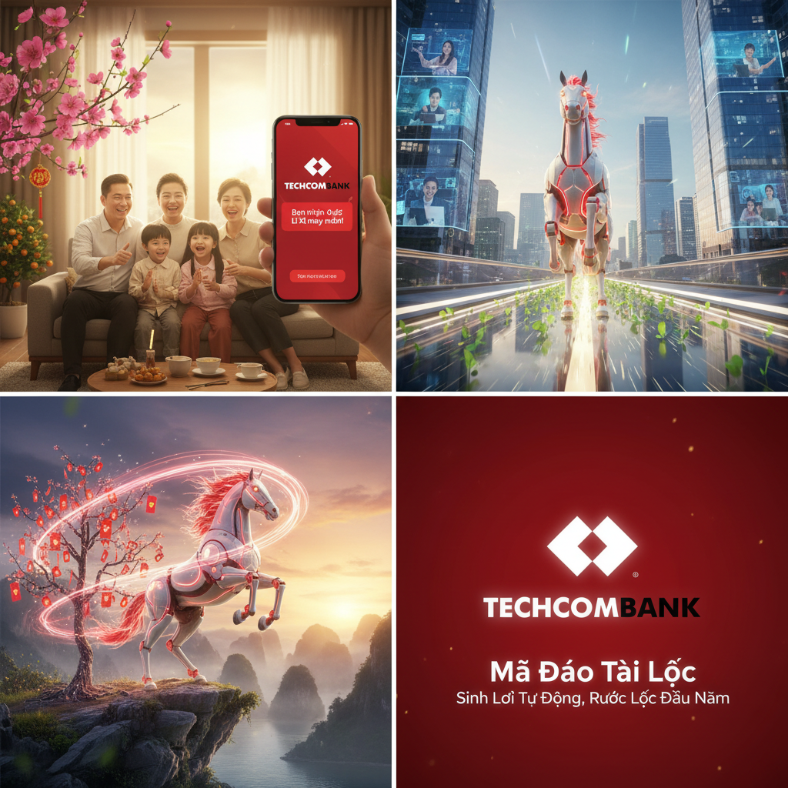
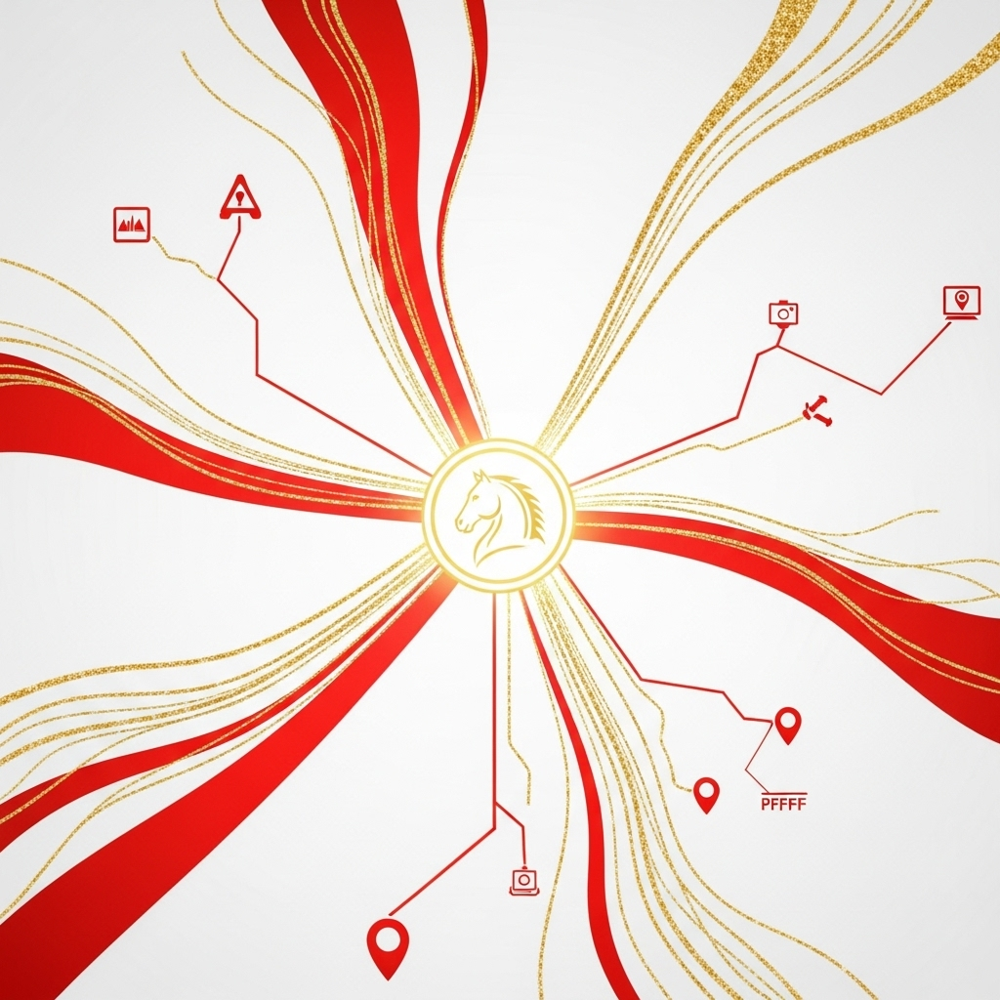

Năm Mã Đáo Thành Công - Lộc Vàng Gõ Cửa
Tết 2026, cùng Techcombank khởi đầu một năm mới sung túc và may mắn với "Sinh Lời Tự Động".
The Big Idea: "Mã Đáo" mang "Lộc Vàng"
Năm Giáp Ngọ 2026 là năm của tốc độ, sức mạnh và thành công. "Sinh Lời Tự Động" của Techcombank, với khả năng sinh lời vượt trội và linh hoạt, chính là "chú ngựa chiến" giúp tài sản của bạn bứt phá, mang "lộc vàng" về nhà trong năm mới.
Sinh Lời Tự Động - Tiền Của Bạn Tự Lớn Lên
Không cần gửi tiết kiệm, không cần lo lắng về kỳ hạn. Với "Sinh Lời Tự Động", toàn bộ số dư trong tài khoản của bạn sẽ tự động sinh lời mỗi ngày với lãi suất lên đến 4.4%/năm, trong khi bạn vẫn có thể chi tiêu linh hoạt 24/7.
3 Trụ Cột Truyền Thông
- Tết Thảnh Thơi: "Sinh Lời Tự Động" giúp bạn an tâm vui Tết, không lo bỏ lỡ cơ hội sinh lời.
- Lộc Đầu Năm: Khởi đầu năm mới với tài lộc sinh sôi nảy nở ngay trong tài khoản.
- Bứt Phá Cùng Ngựa Vàng: Năm Giáp Ngọ, hãy để tài sản của bạn phi nước đại cùng "Sinh Lời Tự Động".
Ý Tưởng TVC 30s
Hình ảnh một chú ngựa vàng dũng mãnh, chở đầy những đồng tiền vàng lấp lánh, phi nước đại đến từng nhà, mang theo tài lộc và may mắn. TVC kết thúc với hình ảnh gia đình sum vầy, an vui bên nhau, với ứng dụng Techcombank Mobile hiển thị số tiền lời đang tăng lên từng ngày.
Kế Hoạch Kích Hoạt Đa Kênh
Truyền thông đại chúng: TVC trên các kênh truyền hình lớn, quảng cáo trên báo và các trang tin tức uy tín.
Digital Marketing: Quảng cáo trên mạng xã hội, hợp tác với các KOLs, tổ chức mini-game và livestream.
Hoạt động tại điểm giao dịch: Trang trí không gian Tết, tổ chức các hoạt động tặng quà và tư vấn cho khách hàng.
Mục Tiêu Chiến Dịch (KPIs)
Mục tiêu chính: Đạt 3 triệu khách hàng mới kích hoạt "Sinh Lời Tự Động" trong quý 1/2026.
- Tăng 20% nhận diện thương hiệu Techcombank.
- Tăng 15% lượng giao dịch trên Techcombank Mobile.
- Đạt 10 triệu lượt tương tác trên các kênh mạng xã hội.
Slogan
- Techcombank - Năm Mã Đáo, Lộc Vàng Vào.
- Sinh Lời Tự Động - Tết Thêm Sung Túc.
- Tết An Vui, Tiền Sinh Sôi.
Kết Luận
Chiến dịch Tết 2026 của Techcombank không chỉ là một chiến dịch quảng cáo, mà còn là một lời chúc may mắn, tài lộc và thành công mà chúng tôi muốn gửi đến tất cả khách hàng. Với "Sinh Lời Tự Động", chúng tôi tin rằng mỗi khách hàng sẽ có một cái Tết thật trọn vẹn và một năm mới bứt phá.